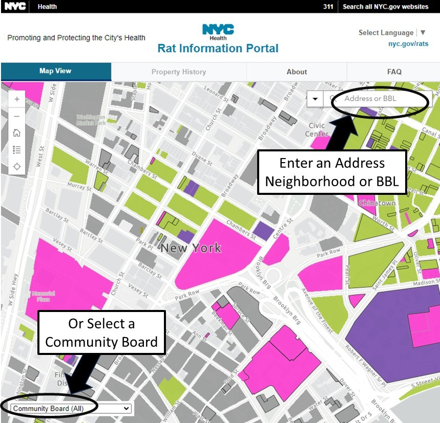
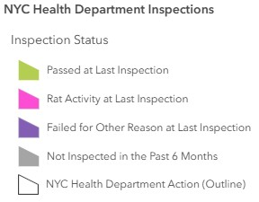
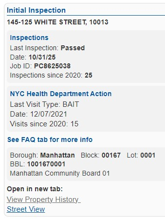

Property History
[address goes here]
BBL [bbl goes here]
How To Use This Map
Welcome to New York City’s Rat Information Portal. This web-based mapping application lets you view rat inspection and action data collected by the NYC Health Department.
For Address, ZIP code, or neighborhood: Enter search text and select a result.
For BBL: Click the drop-down arrow on the left side of the search bar and select NYC Health Department Inspections, then enter the BBL. Or enter the BBL, wait briefly, and select the BBL result shown below the search box.
Use the Community Board toggle and drop-down menu to zoom to a Community Board. The map will re-center and zoom to the selected area. Select Community Board (All) to reset the map and show all properties.

The legend provides a reference for the symbols and inspection results shown on the map. Use it to understand how properties are categorized based on their most recent inspection.
The legend can also be accessed directly from the map using the Legend widget.
For a full description of inspection results and the inspection process, see the FAQ.

Click any property to view inspection and NYC Health Department action information. The pop-up shows the latest inspection type, result, and total number of inspections in the last 5 years. Properties not inspected in the last six months appear gray.
You can view a list of inspections and NYC Health Department actions by clicking on View Property History and the results will open in a new tab.
For a full description of the inspection process and outcomes, see the FAQ.

Frequently Asked Questions
The Rat Information Portal map is a web-based mapping application that allows users to view rat inspection and action data collected by the NYC Health Department over the past 5 years.
BBL stands for Borough Block and Lot and is a unique ID for every tax lot in NYC. The NYC Health Department uses BBL to track and identify properties that may have many different street addresses or no street address. For properties without an address, such as parks and vacant lots, BBL is the best way to search. Some BBLs in NYC have many different buildings on them. The NYC Health Department performs and reports on inspections by BBL. If enforcement is needed on a property, the NYC Health Department will determine the owner of the BBL.
- An initial inspection is conducted in response to a 311 complaint or a proactive rat indexing inspection. If an initial inspection finds rat activity, conditions that attract rats, or other animal nuisance conditions, the property will fail the inspection, and the property owner will be mailed a Commissioner’s Order to Abate (COTA). If the property is owned or managed by a City, State, or Federal agency, a City Agency Referral Letter is mailed, requesting that the conditions be remediated.
- A compliance inspection is conducted on private property after a property fails its initial inspection and receives a COTA. The Health Department will only schedule a compliance inspection after the property owner has been notified of the rat conditions and given time to remediate. A compliance inspection is a follow-up visit to see if the problem was corrected. If the problem is not corrected, the owner of the property will receive one or more summons depending on the severity of the conditions.
Inspectors look for signs of rat activity, such as:
- Tracks
- Fresh Droppings
- Burrows
- Active runways or rubmarks
- Fresh Gnawing
- Live or dead rats
Inspectors also look for mice and conditions that may attract rodents such as harborage, clutter, and uncontained garbage that may be feeding rodents. Inspectors will check for animal nuisance conditions in response to 311 complaints.
A property “Passed at Last Inspection” if the inspector did not observe any active signs of rats or mouse activity, conditions that attract rodent activity, or animal nuisance conditions. The property will appear green on the map.
A property is marked “Rat Activity at Last Inspection” when an inspector observed signs of rat activity. Signs of rat activity include:
- Tracks
- Fresh Droppings
- Burrows
- Active runways or rubmarks
- Fresh Gnawing
- Live or dead rats
The property will appear pink on the map.
A property is marked “Failed for Other Reason” when an inspector observed any other health code violation such as:
- Exposed or uncontained garbage
- Harborage conditions, such as clutter or overgrown vegetation
- Mice
- Animal nuisance conditions, such as pigeon droppings
The property will appear purple on the map.
Inspection results are typically available within 5 business days of the inspection being conducted and approved by a supervisor.
If inspectors find signs of rat activity, mice, conditions that attract rats, or animal nuisance conditions, the property owner will receive a Commissioner’s Order to Abate (COTA) with an inspection report and guidance on how to fix the problems.
Twelve to thirty (12-30) days after an order is mailed to a private property owner, the Health Department will conduct a follow-up compliance inspection. If conditions have not been corrected, the owner will receive a summons. The NYC Health Department may also treat properties and bill owners for the service. The NYC Health Department occasionally cleans or performs stoppage on properties.
Properties that have not been inspected in the last six months will appear gray on the map. You can still view their inspection history by clicking on the property.
The property will appear grey on the map.
If a property is not appearing on the map, it may not have a valid BBL (Borough, Block, and Lot number), or its BBL may have changed due to a property merger, subdivision, or update. To find the current or previous BBLs for a property, please visit the Department of Finance’s Property Information Portal. You can search by Borough, Block, and Lot or by address, and then click on "Tax Map History" and then on "History of Tax Map Changes" to see any BBL changes.
The NYC Health Department may send staff to take action on a property if the owner fails to do so after receiving an order. Actions that may be taken include:
- Bait: Application of rodenticide or other treatment.
- Monitoring: Monitoring a property for rat activity after an intervention.
- Clean up: Removal of garbage and clutter.
- Stoppage: Collapsing or sealing rat burrows in structures or soil.
The property will have a black outline:
You can refer to the Job ID in the information pop-up and email ratportal@health.nyc.gov with your question.
You can submit a complaint online through 311.
Include a description of the problem and the address of the location. Inspectors can only inspect areas accessible to them. If it is a private area, include contact info to schedule access.